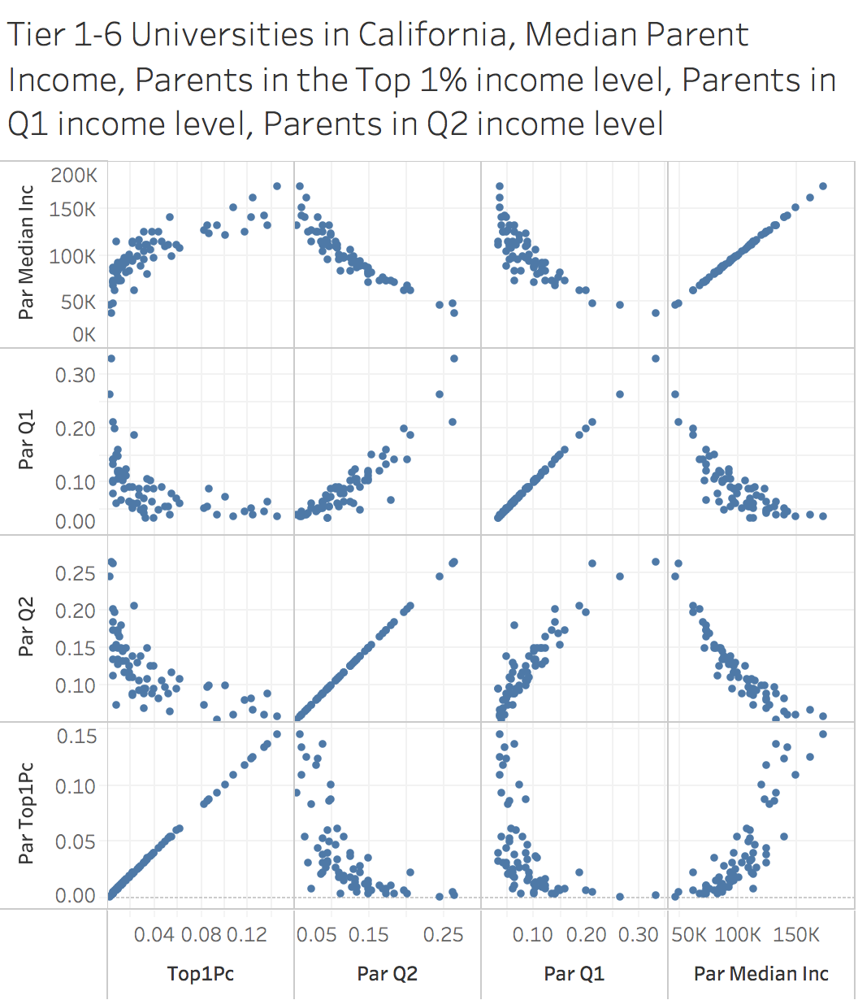

Nick Kebbas
MSCS, University of San Francisco
Expected Graduation: 2020
nkebbas@usfca.edu
I enjoy writing Java and Javascript, and I'm an Oklahoma City Thunder fan.
Skills
From the Opportunity Insights Website: As part of our research studies, we put out publicly available datasets that can be used by other researchers and practitioners to support their own work. These datasets allow you to analyze social mobility and a variety of other outcomes from life expectancy to patent rates by neighborhood, college, parental income level, and racial background. You can search for datasets by geographic level (e.g., Census tracts), by topic (e.g., education), or by the title of the paper. Need technical assistance with these data? Contact us at info@opportunityinsights.org
The data set is about 2,000 rows and 50 columns in its entirety. We accessed this data on February 21, 2020.
This chart shows a scatterplot matrix measuring top tier (tier 1 through 6) universities in California. The tiers are ranked by competitive, with 1 being the most competitive, and 6 being the least competitive for our analysis. The original dataset had tiers up to 11, with 11 being the least competitive. Each dot on each matrix represents a university.
The columns we consider are median parent income, parents in the Top 1% income level, parents in Q1 income level, and parents in Q2 income level. Each individual scatterplot represents one of the columns on the x-axis, and one of the columns on the y-axis. Hence there are 16 total scatterplots in the matrix.
As expected, there are consistencies with most of the universities, in that universities with a high median income and high number of parents in the top 1% of income also tend to have a relatively low number of parents in the Q1 and Q2 income brackets. What's more interesting is that high tier public universities in California tend to have a higher income mobility than high tier private universities in California. We can see that many UC and Cal State schools are nearer to the middle in all 4 areas considered, while private universities such as Stanford and Santa Clara University are at the high end in terms of parent median income and parents in the top 1%, but at the very low end in number of parents in the Q1 and Q2 income brackets.
We wrangled the data for the Tableu visualization using various filters available through the Tableau Desktop interface.
View D3 Version (Data was wrangled in Excel) »
| Letter | Done? | Description |
|---|---|---|
| A | This grade was achieved because I implemented a scatterplot matrix in Tableau Desktop and D3 version 5. |
Nick Kebbas
MSCS, University of San Francisco
Expected Graduation: 2020
nkebbas@usfca.edu
I enjoy writing Java and Javascript, and I'm an Oklahoma City Thunder fan.